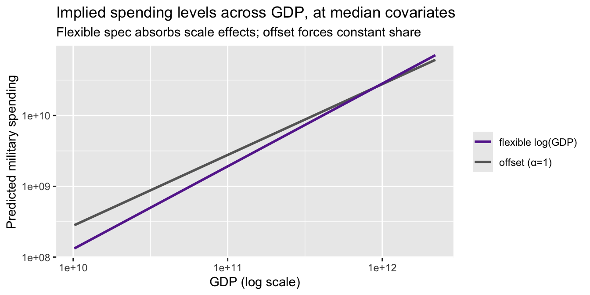

library(ggplot2)
library(sandwich)
library(lmtest)
library(estimatr)
library(carData)
options(digits = 4)7. Probit and MLE
Binary outcomes, nonnegative outcomes, and quasi-maximum likelihood
Chapter 6 developed the likelihood for the normal linear model, where MLE turned out to be OLS. This chapter applies the same MLE toolkit to genuinely nonlinear problems: modeling binary outcomes with probit, and modeling nonnegative outcomes with the exponential conditional mean. We start with the linear probability model (LPM), motivate the probit link, write the probit likelihood and score by hand, implement Newton–Raphson, and compare everything to R’s built-in glm(). We then turn to Poisson quasi-maximum likelihood estimation (QMLE) for nonnegative data, following Wooldridge (2023). The running theme is that the score equation \(\sum s_i(\beta) = 0\) is just another moment condition — the same logic that gave us OLS, but now for nonlinear models.
Questions this chapter answers:
- Why does the linear probability model predict outside \([0, 1]\), and how does probit fix this?
- What is the probit model, and how does it arise from a latent variable representation?
- How do we interpret probit coefficients — and why are marginal effects needed?
- How does Newton-Raphson find the MLE, and why does it converge so fast?
- What is Poisson QMLE, and why is it consistent even when \(Y\) is not a count?
We use the Mroz (1987) dataset: 753 married women, with labor force participation (lfp) as the binary outcome.
data(Mroz)
Mroz$lfp_bin <- as.integer(Mroz$lfp == "yes")
mean(Mroz$lfp_bin)[1] 0.5684About 57% of women in the sample participate in the labor force.
1 The linear probability model
When \(Y \in \{0,1\}\), the conditional expectation is a probability:
\[E[Y \mid X] = P(Y = 1 \mid X)\]
The best linear predictor (Chapter 2) still exists — OLS estimates it by solving the usual normal equations. This is the linear probability model (LPM):
lpm <- lm_robust(lfp_bin ~ k5 + k618 + age + wc + inc, data = Mroz, se_type = "HC2")
summary(lpm)
Call:
lm_robust(formula = lfp_bin ~ k5 + k618 + age + wc + inc, data = Mroz,
se_type = "HC2")
Standard error type: HC2
Coefficients:
Estimate Std. Error t value Pr(>|t|) CI Lower CI Upper DF
(Intercept) 1.28867 0.11527 11.18 6.12e-27 1.06239 1.51495 747
k5 -0.30255 0.03297 -9.18 4.28e-19 -0.36728 -0.23783 747
k618 -0.01670 0.01462 -1.14 2.54e-01 -0.04540 0.01200 747
age -0.01320 0.00243 -5.43 7.77e-08 -0.01798 -0.00843 747
wcyes 0.22065 0.03707 5.95 4.05e-09 0.14788 0.29341 747
inc -0.00627 0.00153 -4.10 4.50e-05 -0.00927 -0.00327 747
Multiple R-squared: 0.131 , Adjusted R-squared: 0.125
F-statistic: 28.8 on 5 and 747 DF, p-value: <2e-16Binary outcomes have built-in heteroskedasticity: \(\text{Var}(Y \mid X) = p(X)(1 - p(X))\) depends on \(X\) by construction, so we use HC2 standard errors throughout.
1.1 Predictions outside \([0,1]\)
The LPM is a linear function — nothing stops it from predicting probabilities below 0 or above 1:
lpm_ols <- lm(lfp_bin ~ k5 + k618 + age + wc + inc, data = Mroz)
p_hat_lpm <- fitted(lpm_ols)
c(min = min(p_hat_lpm), max = max(p_hat_lpm),
outside_01 = sum(p_hat_lpm < 0 | p_hat_lpm > 1)) min max outside_01
-0.286 1.024 11.000 df_lpm <- data.frame(fitted = p_hat_lpm, age = Mroz$age, y = Mroz$lfp_bin)
ggplot(df_lpm, aes(age, fitted)) +
geom_point(alpha = 0.3) +
geom_hline(yintercept = c(0, 1), linetype = "dashed", color = "red") +
labs(title = "LPM fitted values vs. age",
subtitle = "Dashed lines mark 0 and 1 --- LPM can exceed these bounds",
y = "P̂(lfp = 1)")
This motivates models that constrain predictions to \([0, 1]\).
WarningLPM Predictions Outside [0, 1]
The linear probability model can predict probabilities below 0 or above 1 because it fits a line through binary data. While this doesn’t affect the interpretation of coefficients as average marginal effects, it limits the model’s use for prediction.
2 The probit model
2.1 Latent variable representation
Suppose there is an unobserved continuous variable:
\[Y_i^* = X_i'\beta + \varepsilon_i, \qquad \varepsilon_i \sim N(0, 1)\]
We observe \(Y_i = \mathbf{1}\{Y_i^* > 0\}\). Then:
\[P(Y_i = 1 \mid X_i) = P(\varepsilon_i > -X_i'\beta) = \Phi(X_i'\beta)\]
where \(\Phi\) is the standard normal CDF. This is the probit model — a single-index model with link function \(G = \Phi\).
Definition 1 (Probit Model) The probit model specifies \(P(Y_i = 1 | X_i) = \Phi(X_i'\beta)\), where \(\Phi\) is the standard normal CDF. It arises from a latent variable \(Y_i^* = X_i'\beta + \varepsilon_i\) with \(\varepsilon_i \sim N(0,1)\) and \(Y_i = \mathbf{1}\{Y_i^* > 0\}\).
2.2 Fitting probit with glm()
probit <- glm(lfp_bin ~ k5 + k618 + age + wc + inc,
data = Mroz, family = binomial(link = "probit"))
summary(probit)
Call:
glm(formula = lfp_bin ~ k5 + k618 + age + wc + inc, family = binomial(link = "probit"),
data = Mroz)
Coefficients:
Estimate Std. Error z value Pr(>|z|)
(Intercept) 2.28263 0.36748 6.21 5.2e-10 ***
k5 -0.87865 0.11331 -7.75 8.9e-15 ***
k618 -0.05185 0.04055 -1.28 0.2
age -0.03814 0.00749 -5.09 3.5e-07 ***
wcyes 0.63741 0.11742 5.43 5.7e-08 ***
inc -0.01850 0.00457 -4.05 5.1e-05 ***
---
Signif. codes: 0 '***' 0.001 '**' 0.01 '*' 0.05 '.' 0.1 ' ' 1
(Dispersion parameter for binomial family taken to be 1)
Null deviance: 1029.75 on 752 degrees of freedom
Residual deviance: 923.04 on 747 degrees of freedom
AIC: 935
Number of Fisher Scoring iterations: 4glm() uses Fisher scoring (iteratively reweighted least squares), which is a variant of Newton–Raphson. Below, we implement this from scratch.
2.3 Identification and scale
An important difference from OLS: probit coefficients are identified only up to scale. If we allowed \(\text{Var}(\varepsilon) = \sigma^2\) instead of normalizing to 1, then \(P(Y = 1 \mid X) = \Phi(X'\beta/\sigma)\) — only \(\beta/\sigma\) is identified. The normalization \(\sigma = 1\) pins down the scale, but it means \(\beta_j\) does not have the same interpretation as in OLS. We return to this in the marginal effects section.
3 Writing the probit likelihood by hand
The probit log-likelihood is:
\[\ell_n(\beta) = \sum_{i=1}^n \left[ Y_i \log \Phi(X_i'\beta) + (1 - Y_i) \log(1 - \Phi(X_i'\beta)) \right] \tag{1}\]
y <- Mroz$lfp_bin
X <- model.matrix(~ k5 + k618 + age + wc + inc, data = Mroz)
n <- nrow(X)
K <- ncol(X)
# Log-likelihood
probit_loglik <- function(beta) {
Xb <- as.numeric(X %*% beta)
Phi <- pnorm(Xb)
# Clamp to avoid log(0)
Phi <- pmax(pmin(Phi, 1 - 1e-10), 1e-10)
sum(y * log(Phi) + (1 - y) * log(1 - Phi))
}
# Evaluate at glm's estimate
probit_loglik(coef(probit))[1] -461.5logLik(probit)'log Lik.' -461.5 (df=6)3.1 Profile likelihood
We can visualize the likelihood as a function of a single coefficient, holding the others at their MLE values:
beta_hat <- coef(probit)
j <- 2 # k5 coefficient
b_grid <- seq(beta_hat[j] - 1, beta_hat[j] + 1, length.out = 200)
ll_profile <- numeric(length(b_grid))
for (i in seq_along(b_grid)) {
beta_try <- beta_hat
beta_try[j] <- b_grid[i]
ll_profile[i] <- probit_loglik(beta_try)
}
df_profile <- data.frame(beta_k5 = b_grid, loglik = ll_profile)
ggplot(df_profile, aes(beta_k5, loglik)) +
geom_line(linewidth = 1) +
geom_vline(xintercept = beta_hat[j], linetype = "dashed", color = "red") +
labs(title = "Profile log-likelihood for β_k5",
subtitle = paste("MLE =", round(beta_hat[j], 3)),
x = expression(beta[k5]), y = "Log-likelihood")
4 The score function
Recall the score and Fisher information from Chapter 6. The individual score contribution for the probit model is:
\[s_i(\beta) = \frac{\phi(X_i'\beta)}{\Phi(X_i'\beta)(1 - \Phi(X_i'\beta))} (Y_i - \Phi(X_i'\beta)) X_i \tag{2}\]
where \(\phi\) is the standard normal pdf. The weight \(w_i = \phi/({\Phi(1 - \Phi)})\) upweights observations near \(X'\beta = 0\) (where the likelihood is most informative) and downweights observations deep in the tails.
# Score function (returns a K-vector)
probit_score <- function(beta) {
Xb <- as.numeric(X %*% beta)
Phi <- pnorm(Xb)
phi <- dnorm(Xb)
Phi <- pmax(pmin(Phi, 1 - 1e-10), 1e-10)
w <- phi / (Phi * (1 - Phi))
resid_w <- w * (y - Phi)
as.numeric(t(X) %*% resid_w)
}
# At the MLE, the score should be zero
probit_score(coef(probit))[1] 1.798e-04 7.338e-05 6.640e-04 6.994e-03 1.101e-04 7.178e-03All elements are numerically zero — confirming that glm() found the score root.
4.1 Comparing estimating equations
Setting the score to zero defines the MLE. Compare this to the OLS normal equation:
| Model | Estimating equation | Weights |
|---|---|---|
| OLS | \(\sum_i X_i(Y_i - X_i'\beta) = 0\) | Equal |
| Probit MLE | \(\sum_i w_i(Y_i - \Phi(X_i'\beta)) X_i = 0\) | \(w_i = \phi/(\Phi(1-\Phi))\) |
| General | \(\sum_i g_i(\theta) = 0\) | \(\to\) GMM |
Both OLS and probit MLE are method-of-moments estimators — they set sample moment conditions to zero. GMM (Chapter 13) is the general framework.
TipThe Probit Score Is a Moment Condition
Setting the probit score to zero, \(\sum w_i(Y_i - \Phi(X_i'\beta))X_i = 0\), is a method-of-moments estimating equation — just like OLS normal equations but with observation-specific weights \(w_i\). This connection to GMM (Chapter 11) unifies all the estimators in this course.
5 Newton–Raphson from scratch
The Hessian (second derivative of the log-likelihood) is:
# Hessian function (returns a K x K matrix)
probit_hessian <- function(beta) {
Xb <- as.numeric(X %*% beta)
Phi <- pnorm(Xb)
phi <- dnorm(Xb)
Phi <- pmax(pmin(Phi, 1 - 1e-10), 1e-10)
# Weight for the Hessian
lambda <- phi / (Phi * (1 - Phi))
d <- lambda * (lambda + Xb) # diagonal weights
# Negative Hessian contribution from each obs
w_hess <- -(phi^2) / (Phi * (1 - Phi))^2 *
((y - Phi) * (-Xb * Phi * (1 - Phi) - phi * (1 - 2 * Phi)) -
phi^2) / (1)
# Simpler: use the expected Hessian (Fisher scoring)
w_fisher <- phi^2 / (Phi * (1 - Phi))
-t(X) %*% diag(w_fisher) %*% X
}Newton–Raphson iterates: \(\beta^{(t+1)} = \beta^{(t)} - [H_n(\beta^{(t)})]^{-1} S_n(\beta^{(t)})\).
# Newton-Raphson (using Fisher scoring: expected Hessian)
newton_raphson_probit <- function(X, y, tol = 1e-8, max_iter = 50) {
n <- nrow(X)
K <- ncol(X)
# Initialize with OLS
beta <- solve(crossprod(X)) %*% crossprod(X, y)
beta <- as.numeric(beta)
for (iter in 1:max_iter) {
Xb <- as.numeric(X %*% beta)
Phi <- pnorm(Xb)
phi <- dnorm(Xb)
Phi <- pmax(pmin(Phi, 1 - 1e-10), 1e-10)
# Score
w <- phi / (Phi * (1 - Phi))
S <- as.numeric(t(X) %*% (w * (y - Phi)))
# Expected Hessian (Fisher scoring)
W <- phi^2 / (Phi * (1 - Phi))
H <- -t(X) %*% diag(W) %*% X
# Update
delta <- -solve(H) %*% S
beta <- beta + as.numeric(delta)
if (max(abs(delta)) < tol) {
return(list(coefficients = beta, iterations = iter,
converged = TRUE, hessian = H))
}
}
list(coefficients = beta, iterations = max_iter, converged = FALSE, hessian = H)
}
fit_nr <- newton_raphson_probit(X, y)
fit_nr$iterations[1] 7# Compare our Newton-Raphson to glm()
data.frame(
Variable = colnames(X),
NR = round(fit_nr$coefficients, 6),
glm = round(coef(probit), 6),
diff = round(fit_nr$coefficients - coef(probit), 10)
) Variable NR glm diff
(Intercept) (Intercept) 2.28263 2.28263 -2.450e-06
k5 k5 -0.87865 -0.87865 3.073e-07
k618 k618 -0.05185 -0.05185 5.738e-07
age age -0.03814 -0.03814 1.780e-08
wcyes wcyes 0.63741 0.63741 3.525e-07
inc inc -0.01850 -0.01850 5.800e-08Our implementation matches glm() to many decimal places, converging in just a handful of iterations.
5.1 Visualizing convergence
# Track convergence
beta_path <- matrix(NA, 20, K)
beta <- as.numeric(solve(crossprod(X)) %*% crossprod(X, y))
beta_path[1, ] <- beta
for (iter in 2:20) {
Xb <- as.numeric(X %*% beta)
Phi <- pnorm(Xb)
phi <- dnorm(Xb)
Phi <- pmax(pmin(Phi, 1 - 1e-10), 1e-10)
w <- phi / (Phi * (1 - Phi))
S <- as.numeric(t(X) %*% (w * (y - Phi)))
W <- phi^2 / (Phi * (1 - Phi))
H <- -t(X) %*% diag(W) %*% X
delta <- -solve(H) %*% S
beta <- beta + as.numeric(delta)
beta_path[iter, ] <- beta
if (max(abs(delta)) < 1e-10) break
}
# Distance from MLE at each iteration
dist_to_mle <- apply(beta_path, 1, function(b) {
if (any(is.na(b))) return(NA)
sqrt(sum((b - coef(probit))^2))
})
dist_to_mle <- dist_to_mle[!is.na(dist_to_mle)]
df_conv <- data.frame(iteration = seq_along(dist_to_mle), distance = dist_to_mle)
ggplot(df_conv, aes(iteration, distance)) +
geom_line(linewidth = 1) +
geom_point(size = 2) +
scale_y_log10() +
labs(title = "Newton-Raphson convergence",
subtitle = "Distance to MLE on log scale --- quadratic convergence",
y = "||β(t) - β̂|| (log scale)")
Newton–Raphson converges quadratically: the number of correct digits roughly doubles each iteration.
NoteNewton-Raphson Exploits Concavity
The probit log-likelihood is globally concave, guaranteeing that Newton-Raphson (or Fisher scoring) converges to the unique maximum from any starting point. Quadratic convergence means the number of correct digits roughly doubles each iteration.
6 Marginal effects
In OLS, \(\partial E[Y \mid X] / \partial x_j = \beta_j\) — the coefficient is the marginal effect. In probit:
\[\frac{\partial P(Y = 1 \mid X)}{\partial x_j} = \phi(X'\beta) \cdot \beta_j\]
The marginal effect depends on \(X\) through \(\phi(X'\beta)\). Two standard summaries:
Definition 2 (Marginal Effects) In the probit model, \(\partial P(Y=1|X)/\partial x_j = \phi(X'\beta) \cdot \beta_j\). The marginal effect at the mean (MEM) evaluates at \(\bar{X}\); the average marginal effect (AME) averages over all observations. AME is comparable to the LPM coefficient.
- Marginal effect at the mean (MEM): evaluate at \(\bar{X}\)
- Average marginal effect (AME): average the marginal effect over all observations
Xb_hat <- as.numeric(X %*% coef(probit))
# Marginal effect at the mean
phi_at_mean <- dnorm(mean(Xb_hat))
mem <- phi_at_mean * coef(probit)
# Average marginal effect
phi_each <- dnorm(Xb_hat)
ame <- colMeans(outer(phi_each, coef(probit)))
# Compare to LPM coefficients
data.frame(
Variable = names(coef(probit)),
LPM = round(coef(lpm_ols), 4),
Probit = round(coef(probit), 4),
MEM = round(mem, 4),
AME = round(ame, 4)
) Variable LPM Probit MEM AME
(Intercept) (Intercept) 1.2887 2.2826 0.8946 0.7986
k5 k5 -0.3026 -0.8787 -0.3444 -0.3074
k618 k618 -0.0167 -0.0519 -0.0203 -0.0181
age age -0.0132 -0.0381 -0.0149 -0.0133
wcyes wcyes 0.2206 0.6374 0.2498 0.2230
inc inc -0.0063 -0.0185 -0.0073 -0.0065The AME is directly comparable to the LPM coefficient: both estimate the average change in \(P(Y=1)\) per unit change in \(X_j\). They are generally similar, with differences reflecting the curvature of \(\Phi\).
6.1 Where marginal effects differ most
# Marginal effect of age as a function of the index
xb_grid <- seq(-3, 3, length.out = 200)
me_age <- dnorm(xb_grid) * coef(probit)["age"]
df_me <- data.frame(index = xb_grid, me = me_age)
ggplot(df_me, aes(index, me)) +
geom_line(linewidth = 1) +
geom_hline(yintercept = coef(lpm_ols)["age"], linetype = "dashed", color = "red") +
labs(title = "Marginal effect of age on P(lfp = 1)",
subtitle = "Probit ME (black) vs. LPM constant effect (red dashed)",
x = "X'β (probit index)", y = "∂P/∂age")
The probit marginal effect is largest near \(X'\beta = 0\) (where the CDF is steepest) and vanishes in the tails. The LPM assumes a constant effect everywhere.
7 Fisher information and standard errors
7.1 Model-based standard errors
Under correct specification, the information matrix equality holds:
\[\mathcal{I}(\beta) = E[s_i s_i'] = -E\left[\frac{\partial^2 \ell_i}{\partial \beta \partial \beta'}\right]\]
The asymptotic variance of \(\hat{\beta}\) is \(\mathcal{I}(\beta)^{-1}/n\), estimated by inverting the negative Hessian:
# Model-based variance: inverse of negative Hessian
V_model <- solve(-fit_nr$hessian)
se_model <- sqrt(diag(V_model))
# Compare to glm's reported SEs
data.frame(
Variable = colnames(X),
SE_manual = round(se_model, 5),
SE_glm = round(summary(probit)$coefficients[, "Std. Error"], 5)
) Variable SE_manual SE_glm
(Intercept) (Intercept) 0.36748 0.36748
k5 k5 0.11331 0.11331
k618 k618 0.04055 0.04055
age age 0.00749 0.00749
wcyes wcyes 0.11742 0.11742
inc inc 0.00457 0.004577.2 Sandwich standard errors
If the probit model is misspecified (wrong link function), the information matrix equality fails and we need the sandwich:
\[V_{\text{sandwich}} = H^{-1} \left(\sum_i s_i s_i'\right) H^{-1}\]
# Robust SEs
coeftest(probit) # model-based
z test of coefficients:
Estimate Std. Error z value Pr(>|z|)
(Intercept) 2.28263 0.36748 6.21 5.2e-10 ***
k5 -0.87865 0.11331 -7.75 8.9e-15 ***
k618 -0.05185 0.04055 -1.28 0.2
age -0.03814 0.00749 -5.09 3.5e-07 ***
wcyes 0.63741 0.11742 5.43 5.7e-08 ***
inc -0.01850 0.00457 -4.05 5.1e-05 ***
---
Signif. codes: 0 '***' 0.001 '**' 0.01 '*' 0.05 '.' 0.1 ' ' 1coeftest(probit, vcov = vcovHC(probit, type = "HC1")) # sandwich
z test of coefficients:
Estimate Std. Error z value Pr(>|z|)
(Intercept) 2.28263 0.37312 6.12 9.5e-10 ***
k5 -0.87865 0.11725 -7.49 6.7e-14 ***
k618 -0.05185 0.04359 -1.19 0.23425
age -0.03814 0.00755 -5.05 4.4e-07 ***
wcyes 0.63741 0.11764 5.42 6.0e-08 ***
inc -0.01850 0.00493 -3.75 0.00018 ***
---
Signif. codes: 0 '***' 0.001 '**' 0.01 '*' 0.05 '.' 0.1 ' ' 1se_classical <- summary(probit)$coefficients[, "Std. Error"]
se_robust <- sqrt(diag(vcovHC(probit, type = "HC1")))
data.frame(
Variable = names(coef(probit)),
Model_based = round(se_classical, 4),
Sandwich = round(se_robust, 4),
Ratio = round(se_robust / se_classical, 3)
) Variable Model_based Sandwich Ratio
(Intercept) (Intercept) 0.3675 0.3731 1.015
k5 k5 0.1133 0.1172 1.035
k618 k618 0.0406 0.0436 1.075
age age 0.0075 0.0076 1.009
wcyes wcyes 0.1174 0.1176 1.002
inc inc 0.0046 0.0049 1.079If model-based and sandwich SEs differ substantially, this signals possible misspecification of the link function. Here they are similar, which is reassuring.
8 LPM vs. probit: applied comparison
8.1 Fitted probabilities
p_probit <- predict(probit, type = "response")
df_compare <- data.frame(
lpm = p_hat_lpm,
probit = p_probit,
y = Mroz$lfp_bin
)
ggplot(df_compare, aes(lpm, probit)) +
geom_point(alpha = 0.3) +
geom_abline(slope = 1, intercept = 0, linetype = "dashed", color = "red") +
labs(title = "LPM vs. Probit fitted probabilities",
subtitle = "Close agreement in the interior, diverge near 0 and 1",
x = "P̂ (LPM)", y = "P̂ (Probit)")
# Summary comparison
data.frame(
Model = c("LPM", "Probit"),
LogLik = c(sum(dbinom(y, 1, pmax(pmin(p_hat_lpm, 1-1e-10), 1e-10), log = TRUE)),
as.numeric(logLik(probit))),
AIC = c(NA, AIC(probit)),
Predictions_outside_01 = c(sum(p_hat_lpm < 0 | p_hat_lpm > 1), 0)
) Model LogLik AIC Predictions_outside_01
1 LPM -462.6 NA 11
2 Probit -461.5 935 08.2 When does the choice matter?
The LPM and probit give nearly identical results when predicted probabilities are far from 0 and 1. They diverge most when:
- The outcome is rare (or nearly universal)
- Predictions reach the boundaries
- You need to interpret the functional form (e.g., for counterfactual predictions)
For estimating average marginal effects, the LPM is a robust baseline that doesn’t require correct specification of the link function.
9 Poisson QMLE for nonnegative outcomes
Probit addresses binary outcomes (\(Y \in \{0, 1\}\)) by passing a linear index through \(\Phi\). But what about nonnegative outcomes — counts, dollar amounts, rates, or any \(Y \geq 0\)? A linear model \(E[Y \mid X] = X'\beta\) can predict negative values, just as the LPM predicts outside \([0,1]\). The natural fix is an exponential conditional mean:
\[E[Y \mid X] = \exp(X'\beta)\]
This guarantees nonnegative predictions. The question is how to estimate \(\beta\).
9.1 The Poisson log-likelihood as a working likelihood
The Poisson distribution has mass function \(P(Y = y) = e^{-\mu}\mu^y / y!\) with mean \(\mu\). Its log-likelihood for observation \(i\) is:
\[\ell_i(\beta) = Y_i \cdot X_i'\beta - \exp(X_i'\beta) - \log(Y_i!)\]
The key insight, emphasized by Gourieroux, Monfort, and Trognon (1984) and developed extensively in Wooldridge (2010, Ch. 18; 2023), is that maximizing this likelihood yields consistent estimates of \(\beta\) even when \(Y\) is not Poisson — as long as the conditional mean \(E[Y \mid X] = \exp(X'\beta)\) is correctly specified. This is quasi-maximum likelihood estimation (QMLE).
Definition 3 (Quasi-Maximum Likelihood Estimation (QMLE)) QMLE uses a likelihood function as a device for estimation without assuming the full distribution is correct. For the Poisson QMLE, consistency of \(\hat{\beta}\) requires only that \(E[Y \mid X] = \exp(X'\beta)\). The response need not be a count, need not be integer-valued, and can even be continuous.
Wooldridge (2023) develops the broader framework of QMLE using linear exponential family (LEF) distributions. The key pairings are:
| Conditional mean | LEF density | Use case |
|---|---|---|
| Linear | Normal | Any response; leads to OLS |
| Logistic | Bernoulli | Binary or fractional response |
| Exponential | Poisson | Nonnegative response (count, corner), no natural upper bound |
When \(G^{-1}(\cdot)\) is the canonical link function associated with the chosen LEF density, pooled QMLE has especially attractive properties, including equivalence with imputation estimators in causal inference settings.
9.2 The score is a moment condition
The Poisson score (gradient of the log-likelihood) is:
\[s_i(\beta) = \left(Y_i - \exp(X_i'\beta)\right) X_i\]
Setting the sum of scores to zero gives the estimating equation:
\[\sum_{i=1}^n \left(Y_i - \exp(X_i'\beta)\right) X_i = 0\]
Compare this to OLS and probit:
| Estimator | Moment condition | Mean function |
|---|---|---|
| OLS | \(\sum X_i(Y_i - X_i'\beta) = 0\) | \(E[Y\mid X] = X'\beta\) |
| Probit MLE | \(\sum w_i(Y_i - \Phi(X_i'\beta))X_i = 0\) | \(E[Y\mid X] = \Phi(X'\beta)\) |
| Poisson QMLE | \(\sum X_i(Y_i - \exp(X_i'\beta)) = 0\) | \(E[Y\mid X] = \exp(X'\beta)\) |
All three are method-of-moments estimators that set sample moment conditions to zero. The Poisson score is simpler than the probit score — no observation-specific weights \(w_i\).
TipPoisson QMLE Is Nonlinear GMM
The Poisson score equation \(\sum X_i(Y_i - \exp(X_i'\beta)) = 0\) is a system of \(K\) nonlinear moment conditions in \(K\) unknowns. This makes Poisson QMLE a just-identified nonlinear GMM estimator (Chapter 11). Unlike the probit score, the Poisson score has equal weights on all observations. The connection between QMLE and GMM is developed further in Wooldridge (2023), who shows that pooled Poisson QMLE extends naturally to difference-in-differences and panel data settings.
9.3 Implementation in R
We simulate data that is clearly not Poisson — continuous, with variance \(\mu^2\) instead of \(\mu\) — but has the correct exponential conditional mean.
set.seed(307)
n_pois <- 1000
x1_p <- rnorm(n_pois)
x2_p <- rnorm(n_pois)
# True conditional mean: exp(0.5 + 0.8*x1 - 0.3*x2)
beta_true_pois <- c(0.5, 0.8, -0.3)
X_pois <- cbind(1, x1_p, x2_p)
mu_true <- as.numeric(exp(X_pois %*% beta_true_pois))
# Generate Y that is NOT Poisson: continuous with exponential mean
# Y = mu * V where V ~ Exponential(1), so E[Y|X] = mu, Var(Y|X) = mu^2
y_cont <- mu_true * rexp(n_pois)
c(min = min(y_cont), median = median(y_cont),
mean = mean(y_cont), max = max(y_cont),
frac_zero = mean(y_cont == 0)) min median mean max frac_zero
1.558e-04 1.037e+00 2.319e+00 4.486e+01 0.000e+00 The data is continuous, not integer-valued, and the variance is \(\mu^2\) (not \(\mu\) as Poisson requires). Nevertheless, Poisson QMLE consistently estimates \(\beta\):
pois_fit <- glm(y_cont ~ x1_p + x2_p, family = poisson)
data.frame(
Parameter = c("intercept", "x1", "x2"),
True = beta_true_pois,
QMLE = round(coef(pois_fit), 4)
) Parameter True QMLE
(Intercept) intercept 0.5 0.5286
x1_p x1 0.8 0.7699
x2_p x2 -0.3 -0.31409.4 Why sandwich standard errors are mandatory
The model-based (Poisson) standard errors assume \(\text{Var}(Y \mid X) = E[Y \mid X] = \exp(X'\beta)\). In our simulation, \(\text{Var}(Y \mid X) = \exp(X'\beta)^2\) — far from the Poisson assumption. The information matrix equality fails, so model-based SEs are wrong:
se_model <- summary(pois_fit)$coefficients[, "Std. Error"]
se_sandwich <- sqrt(diag(vcovHC(pois_fit, type = "HC1")))
data.frame(
Parameter = names(coef(pois_fit)),
Model_based = round(se_model, 4),
Sandwich = round(se_sandwich, 4),
Ratio = round(se_sandwich / se_model, 2)
) Parameter Model_based Sandwich Ratio
(Intercept) (Intercept) 0.0264 0.0348 1.32
x1_p x1_p 0.0211 0.0438 2.08
x2_p x2_p 0.0207 0.0417 2.02The sandwich SEs are substantially larger — exactly the same lesson as probit with a misspecified link. Always use sandwich standard errors with Poisson QMLE.
# Proper inference with sandwich SEs
coeftest(pois_fit, vcov = vcovHC(pois_fit, type = "HC1"))
z test of coefficients:
Estimate Std. Error z value Pr(>|z|)
(Intercept) 0.5286 0.0348 15.19 <2e-16 ***
x1_p 0.7699 0.0438 17.57 <2e-16 ***
x2_p -0.3140 0.0417 -7.53 5e-14 ***
---
Signif. codes: 0 '***' 0.001 '**' 0.01 '*' 0.05 '.' 0.1 ' ' 19.5 Comparing to OLS
What happens if we fit a linear model to the same nonnegative data?
ols_nonneg <- lm(y_cont ~ x1_p + x2_p)
# OLS predicts negative values
c(min_ols_fitted = min(fitted(ols_nonneg)),
n_negative = sum(fitted(ols_nonneg) < 0))min_ols_fitted n_negative
-3.853 108.000 df_fit_compare <- data.frame(
ols = fitted(ols_nonneg),
poisson = fitted(pois_fit),
y = y_cont
)
ggplot(df_fit_compare, aes(ols, poisson)) +
geom_point(alpha = 0.3) +
geom_abline(slope = 1, intercept = 0, linetype = "dashed") +
geom_hline(yintercept = 0, color = "gray") +
geom_vline(xintercept = 0, color = "gray") +
labs(title = "OLS vs. Poisson QMLE fitted values",
subtitle = "OLS can predict negative; Poisson QMLE is always positive",
x = "Ŷ (OLS)", y = "Ŷ (Poisson QMLE)")
9.6 Interpreting Poisson QMLE coefficients
Because \(E[Y \mid X] = \exp(X'\beta)\), a one-unit change in \(x_j\) multiplies the conditional mean by \(\exp(\beta_j)\):
\[\frac{E[Y \mid x_j + 1, \mathbf{x}_{-j}]}{E[Y \mid x_j, \mathbf{x}_{-j}]} = \exp(\beta_j)\]
So \(\beta_j\) is a log-proportional effect: a one-unit increase in \(x_j\) changes \(E[Y \mid X]\) by approximately \(100 \cdot \beta_j\) percent (for small \(\beta_j\)). This semi-elasticity interpretation is one reason the exponential mean is popular in applied work.
# Percentage effect interpretation
data.frame(
Parameter = names(coef(pois_fit)),
Coefficient = round(coef(pois_fit), 4),
Pct_effect = paste0(round(100 * coef(pois_fit), 1), "%"),
Exact_multiplier = round(exp(coef(pois_fit)), 4)
) Parameter Coefficient Pct_effect Exact_multiplier
(Intercept) (Intercept) 0.5286 52.9% 1.6965
x1_p x1_p 0.7699 77% 2.1596
x2_p x2_p -0.3140 -31.4% 0.73059.7 Monte Carlo: verifying consistency
To confirm that Poisson QMLE is consistent even with misspecified variance, we run a Monte Carlo with Gamma-distributed data (not Poisson, not even integer):
set.seed(42)
B_pois <- 2000
n_mc <- 500
beta_pois_store <- matrix(NA, B_pois, 3)
for (b in 1:B_pois) {
x1_b <- rnorm(n_mc)
x2_b <- rnorm(n_mc)
mu_b <- exp(0.5 + 0.8 * x1_b - 0.3 * x2_b)
# Gamma-distributed Y: E[Y|X] = mu, Var(Y|X) = mu^2 / shape
y_b <- rgamma(n_mc, shape = 2, rate = 2 / mu_b)
fit_b <- suppressWarnings(glm(y_b ~ x1_b + x2_b, family = poisson))
beta_pois_store[b, ] <- coef(fit_b)
}
# Sampling distribution of beta_x1
df_mc <- data.frame(b_hat = beta_pois_store[, 2])
ggplot(df_mc, aes(b_hat)) +
geom_histogram(aes(y = after_stat(density)), bins = 50, alpha = 0.5) +
stat_function(fun = dnorm,
args = list(mean = mean(beta_pois_store[, 2]),
sd = sd(beta_pois_store[, 2])),
color = "blue", linewidth = 1) +
geom_vline(xintercept = 0.8, linetype = "dashed") +
labs(title = "Poisson QMLE sampling distribution",
subtitle = "Data is Gamma (not Poisson) — estimator is still consistent and normal",
x = expression(hat(beta)[x1]))
data.frame(
Parameter = c("intercept", "x1", "x2"),
True = c(0.5, 0.8, -0.3),
MC_mean = round(colMeans(beta_pois_store), 4),
MC_sd = round(apply(beta_pois_store, 2, sd), 4)
) Parameter True MC_mean MC_sd
1 intercept 0.5 0.4978 0.0402
2 x1 0.8 0.7992 0.0568
3 x2 -0.3 -0.2998 0.0463The Poisson QMLE is centered on the true values and approximately normal, confirming the asymptotic theory. The data is Gamma-distributed — nowhere near Poisson — but the exponential mean is correctly specified, which is all that matters.
WarningWhen Poisson QMLE Fails
Poisson QMLE is consistent only if \(E[Y \mid X] = \exp(X'\beta)\). If the true conditional mean is not exponential — for example, if \(E[Y \mid X]\) is linear or follows a different nonlinear form — the estimator is inconsistent. This is the same as probit: if the true link is not \(\Phi\), the probit MLE is inconsistent for the index parameters. Comparing linear and exponential model estimates is a useful robustness check (Wooldridge, 2023).
10 Ratios, offsets, and denominators
Many outcomes of interest are naturally ratios: events per person-year, spending per dollar of GDP, votes per eligible voter. Three questions to ask before choosing a specification:
- Is the object of interest the rate itself, or the level? A policy evaluator comparing hospitals usually cares about the infection rate per admission. A defense analyst comparing superpowers may care about total spending, with GDP as one predictor among many.
- Do you want to impose a fixed relationship between outcome and denominator, or estimate it? An offset fixes the elasticity at 1; putting the denominator on the right-hand side estimates the elasticity freely.
- Is the ratio bounded in \([0,1]\)? If so, a \([0,1]\)-respecting mean function (logistic) is more honest than an unbounded log-linear model.
These are estimand choices, not statistical restrictions to test. The semiparametric stance is to pick the mean function whose fitted object answers your substantive question, then let sandwich standard errors handle variance misspecification.
10.1 Offset vs. denominator as a covariate
Let \(E\) denote the denominator (exposure) and \(Y\) the event count. Two models with exponential mean:
\[\underbrace{E[Y \mid X, E] = E \cdot \exp(X'\beta)}_{\text{offset: elasticity fixed at 1}}, \qquad \underbrace{E[Y \mid X, E] = E^{\alpha} \exp(X'\beta)}_{\text{flexible elasticity}}\]
Taking logs, the first is \(\log E[Y] = \log E + X'\beta\) (coefficient on \(\log E\) constrained to 1); the second is \(\log E[Y] = \alpha \log E + X'\beta\). Both are Poisson QMLE, fit by
glm(Y ~ X + offset(log(E)), family = poisson) # (a) rate model
glm(Y ~ X + log(E), family = poisson) # (b) free elasticityModel (a) says: “my estimand is the effect of \(X\) on the rate \(Y/E\), with \(E\) entering as exposure.” Model (b) says: “my estimand is the effect of \(X\) on \(Y\) at a given \(E\), and I’ll estimate how \(E\) itself scales \(Y\) along the way.” Pick based on the substantive question, not a pretest.
10.2 Fractional response: Papke–Wooldridge QMLE
When the outcome is a proportion \(Y \in [0,1]\) — a vote share, a participation rate, a budget share — the log-odds transform \(\log(Y/(1-Y))\) breaks at the boundaries and requires ad hoc nudges. Papke & Wooldridge (1996) propose fractional logit QMLE:
\[E[Y \mid X] = \Lambda(X'\beta), \qquad \Lambda(u) = \frac{1}{1 + e^{-u}}\]
estimated by maximizing the Bernoulli quasi-likelihood. Consistency requires only that the logistic mean is correctly specified; \(Y\) can take any value in \([0,1]\), including exact zeros and ones, and need not be a proportion of integers. This is the \([0,1]\) analog of Poisson QMLE. In R: glm(y ~ x, family = quasibinomial("logit")) with sandwich standard errors.
11 Application: military burden and GDP
NATO’s 2% target asks members to spend at least 2% of GDP on defense. Writing \(Y_i\) = military spending and \(G_i\) = GDP, the target is a restriction on the share \(S_i = Y_i / G_i\). Different research questions call for different specifications:
- Does democracy reduce the share? Estimand is the share; use fractional logit on \(S_i\) or Poisson with
offset(log G). - How much does a unit of GDP translate into spending, holding covariates fixed? Estimand is the GDP elasticity; put \(\log G\) on the right.
- What is the level effect of alliance membership? Estimand is \(\partial E[Y]/\partial \text{alliance}\) at fixed \(G\); either Poisson specification works; marginal effect differs.
11.1 A simulated cross-section
set.seed(2026)
n_ctry <- 120
alliance <- rbinom(n_ctry, 1, 0.4)
threat <- rnorm(n_ctry) # standardized
democracy <- rnorm(n_ctry)
log_gdp <- rnorm(n_ctry, mean = 26, sd = 1.5) # log GDP in USD
gdp <- exp(log_gdp)
# True share structure (fractional logit DGP)
eta_share <- -3.5 + 0.7 * alliance + 0.6 * threat - 0.3 * democracy
share_mean <- plogis(eta_share) # E[share | X]
# Observed share drawn from Beta with precision phi
phi <- 40
share_obs <- rbeta(n_ctry, shape1 = phi * share_mean,
shape2 = phi * (1 - share_mean))
# Military spending is share * GDP, plus mild superadditive scale effect
# (great powers spend more as a share at high GDP, independent of X)
scale_factor <- (gdp / median(gdp))^0.08 # alpha ~ 1.08 implicit
milspend <- share_obs * gdp * scale_factor
dat <- data.frame(milspend, share_obs, gdp, log_gdp,
alliance, threat, democracy)
summary(dat[, c("share_obs", "milspend", "gdp")]) share_obs milspend gdp
Min. :0.00000 Min. :2.01e+05 Min. :5.67e+09
1st Qu.:0.00778 1st Qu.:7.83e+08 1st Qu.:5.55e+10
Median :0.03017 Median :4.37e+09 Median :2.43e+11
Mean :0.04679 Mean :3.32e+10 Mean :5.15e+11
3rd Qu.:0.07389 3rd Qu.:2.72e+10 3rd Qu.:4.98e+11
Max. :0.20800 Max. :8.89e+11 Max. :4.67e+12 Shares range over roughly 1–10%, standard for the real data.
11.2 Three specifications, three estimands
# (1) Fractional logit on the share directly
frac_logit <- glm(share_obs ~ alliance + threat + democracy,
data = dat, family = quasibinomial("logit"))
# (2) Poisson with offset: rate model, imposes GDP elasticity = 1
pois_offset <- glm(milspend ~ alliance + threat + democracy +
offset(log(gdp)),
data = dat, family = poisson)
# (3) Poisson with log GDP as covariate: free elasticity
pois_flex <- glm(milspend ~ alliance + threat + democracy + log(gdp),
data = dat, family = poisson)
robust_se <- function(m) sqrt(diag(vcovHC(m, type = "HC1")))
compare <- data.frame(
frac_logit = c(coef(frac_logit), NA),
pois_offset = c(coef(pois_offset), NA),
pois_flex = coef(pois_flex)[c("(Intercept)", "alliance",
"threat", "democracy", "log(gdp)")]
)
rownames(compare) <- c("(Intercept)", "alliance", "threat",
"democracy", "log(gdp)")
round(compare, 3) frac_logit pois_offset pois_flex
(Intercept) -3.521 -3.585 -8.240
alliance 0.692 1.030 0.905
threat 0.718 0.763 0.778
democracy -0.365 -0.419 -0.425
log(gdp) NA NA 1.169Coefficients on alliance, threat, and democracy are close across the three specifications, because for shares in the 1–10% range the logit and log links nearly coincide (both mean functions are approximately linear in the index far from the boundaries).
The flexible Poisson gives a GDP elasticity of \(\hat\alpha =\) 1.17 — not 1. Read this as substance: great powers spend disproportionately more as GDP grows, even after conditioning on alliance, threat, and democracy. The offset specification does not see this coefficient because it is forced to 1 by the estimand definition.
11.3 Interpreting the two Poisson fits
Compare predicted spending for a hypothetical country at median covariates but varying GDP:
gdp_grid <- seq(quantile(gdp, 0.05), quantile(gdp, 0.95), length.out = 60)
nd <- data.frame(gdp = gdp_grid, log_gdp = log(gdp_grid),
alliance = 0, threat = 0, democracy = 0)
nd$pred_offset <- predict(pois_offset, nd, type = "response")
nd$pred_flex <- predict(pois_flex, nd, type = "response")
ggplot(nd, aes(gdp)) +
geom_line(aes(y = pred_offset, color = "offset (α=1)"), linewidth = 1) +
geom_line(aes(y = pred_flex, color = "flexible log(GDP)"), linewidth = 1) +
scale_x_log10() + scale_y_log10() +
scale_color_manual(values = c("offset (α=1)" = "#666666",
"flexible log(GDP)" = "#662a9b"),
name = NULL) +
labs(title = "Implied spending levels across GDP, at median covariates",
subtitle = "Flexible spec absorbs scale effects; offset forces constant share",
y = "Predicted military spending", x = "GDP (log scale)")
The two curves diverge at the top of the GDP distribution — exactly where the substantive debate about NATO burden-sharing lives. Neither is “wrong.” They estimate different objects: the offset spec estimates the effect of \(X\) on the share; the flexible spec estimates the effect of \(X\) on levels and separately describes how levels move with GDP.
11.4 When the offset is principled
Use offset(log E) when the rate is the defined estimand — when you’re willing to say, before looking at the data, “I care about spending per dollar of GDP, not about whether that ratio varies systematically with GDP.” Examples:
- Epidemiology: infection rates per 1000 patient-days. Scale effects in hospital size might exist but aren’t the estimand.
- Voter turnout: turnout rate per eligible voter. Population is exposure; total votes per se isn’t the object.
- Insurance: claims per policy-year. Exposure is baked into how the product is priced.
Avoid imposing the offset when GDP-elasticity, population-scale effects, or size itself are part of the substantive question — or when you have no prior reason to fix the elasticity at 1. The flexible specification is the semiparametric default.
12 Population weights
Survey weights \(w_i = 1/\pi_i\) invert the sampling probability \(\pi_i\) with which observation \(i\) entered the sample. When sampling is unequal, unweighted estimators converge to the sample-weighted population parameter, not the population-average parameter.
Two distinct uses:
- Sampling weights. When the design oversamples some strata (e.g., high-GDP countries in our example, or Black respondents in a U.S. survey), weighting recovers population-average estimands. Under correct mean specification the weighted and unweighted estimators are both consistent for \(\beta\), but they converge to different limits under misspecification. Wooldridge (2010, Ch. 20) calls this the “population-averaged” interpretation of QMLE under misspecification — a useful hedge when you’re unsure the mean function is exactly right.
- Analytic / aggregation weights. When each row is a cell mean from underlying groups of different sizes, weighting by group size recovers the individual-level estimand.
12.1 Costs
- Efficiency loss. Under correct specification and equal-probability sampling, unweighted QMLE has smaller variance than weighted. This is the Solon–Haider–Wooldridge (2015) tradeoff: weight when your estimand demands it, not reflexively.
- Standard errors.
glm(..., weights = w)treats weights as frequency weights, producing incorrect standard errors for sampling weights. Usesurvey::svyglm(), or compute sandwich SEs with the linearized variance. The MLE-style information matrix inverse is wrong when weights are sampling weights.
12.2 Demonstration: stratified sample
Draw a stratified sample that oversamples high-GDP countries; fit the flexible Poisson both ways.
# Stratify on GDP quartiles; oversample top quartile
q_gdp <- cut(dat$gdp, breaks = quantile(dat$gdp, probs = c(0, .5, .75, 1)),
include.lowest = TRUE, labels = c("low", "mid", "high"))
samp_prob <- c(low = 0.5, mid = 0.5, high = 1.0)
dat$pi_i <- samp_prob[as.character(q_gdp)]
in_samp <- rbinom(n_ctry, 1, dat$pi_i) == 1
samp <- dat[in_samp, ]
samp$w <- 1 / samp$pi_i
# Unweighted (sample-conditional estimand)
pois_unw <- glm(milspend ~ alliance + threat + democracy + log(gdp),
data = samp, family = poisson)
# Weighted (population estimand); note: SEs via sandwich, not glm defaults
pois_wtd <- glm(milspend ~ alliance + threat + democracy + log(gdp),
data = samp, family = quasipoisson, weights = w)
compare_w <- data.frame(
population = round(coef(pois_flex), 3), # fit on full "population"
unweighted = round(coef(pois_unw), 3),
weighted = round(coef(pois_wtd), 3)
)
compare_w population unweighted weighted
(Intercept) -8.240 -9.444 -9.733
alliance 0.905 0.955 0.934
threat 0.778 0.764 0.777
democracy -0.425 -0.417 -0.416
log(gdp) 1.169 1.210 1.221Weighted and unweighted estimates differ modestly because the stratification correlates with log(gdp), which is already in the model. When the mean is correctly specified, the difference is pure efficiency loss from weighting. When the mean is misspecified — say, if the true elasticity varies across GDP — the weighted estimator targets the population-average elasticity and the unweighted targets the sample-conditional one. Pick based on which object you want to report.
NoteSampling Weights Need Sandwich SEs
glm(..., weights = w) treats weights as if they were frequency counts. For sampling weights, use survey::svyglm() with a design object, or pair glm(..., family = quasipoisson) with sandwich::vcovHC(). The information-matrix formula for variance is wrong under the actual weighted DGP.
13 Prediction and classification
# Predicted probabilities
p_pred <- predict(probit, type = "response")
# Classify at threshold 0.5
y_pred <- as.integer(p_pred > 0.5)
# Confusion matrix
table(Predicted = y_pred, Actual = Mroz$lfp_bin) Actual
Predicted 0 1
0 166 83
1 159 345# Accuracy
mean(y_pred == Mroz$lfp_bin)[1] 0.6786A simple 50% threshold gives reasonable classification. But the primary goal of probit in econometrics is estimating the effect of covariates on \(P(Y=1)\), not prediction.
14 Connecting to GMM
The probit score equation, the OLS normal equation, and the GLS estimating equation are all special cases of:
\[\frac{1}{n} \sum_{i=1}^n g(W_i, \theta) = 0\]
| Estimator | Moment condition \(g(W_i, \theta)\) | Mean function |
|---|---|---|
| OLS | \(X_i(Y_i - X_i'\beta)\) | \(X'\beta\) (linear) |
| WLS | \(W_i^{1/2} X_i(Y_i - X_i'\beta)\) | \(X'\beta\) (linear) |
| Probit MLE | \(w_i(Y_i - \Phi(X_i'\beta)) X_i\) | \(\Phi(X'\beta)\) (binary) |
| Poisson QMLE | \(X_i(Y_i - \exp(X_i'\beta))\) | \(\exp(X'\beta)\) (nonneg) |
# All four are sample moment conditions that equal zero at the estimate
# OLS
max(abs(t(X) %*% (y - X %*% coef(lpm_ols))))[1] 2.976e-10# Probit score
max(abs(probit_score(coef(probit))))[1] 0.007178# Poisson QMLE score
max(abs(t(model.matrix(pois_fit)) %*% (y_cont - fitted(pois_fit))))[1] 4.43e-09When there are more moment conditions than parameters, the generalized method of moments (Chapter 11) provides the efficient way to combine them.
15 Summary
| Concept | Formula | R code |
|---|---|---|
| Linear probability model | \(P(Y=1\mid X) = X'\beta\) | lm_robust(y ~ x, se_type = "HC2") |
| Probit model | \(P(Y=1\mid X) = \Phi(X'\beta)\) | glm(y ~ x, family = binomial(link = "probit")) |
| Log-likelihood | \(\sum[Y\log\Phi + (1-Y)\log(1-\Phi)]\) | logLik(probit) |
| Score | \(\sum w_i(Y_i - \Phi(X_i'\beta))X_i = 0\) | manual (see above) |
| Newton–Raphson | \(\beta^{(t+1)} = \beta^{(t)} - H^{-1}S\) | glm() does this internally |
| Average marginal effect | \(\frac{1}{n}\sum \phi(X_i'\hat\beta)\hat\beta_j\) | mean(dnorm(Xb)) * coef(probit) |
| Poisson QMLE | \(E[Y\mid X] = \exp(X'\beta)\), \(Y \geq 0\) | glm(y ~ x, family = poisson) |
| Poisson score | \(\sum X_i(Y_i - \exp(X_i'\beta)) = 0\) | nonlinear GMM moment condition |
| Sandwich SEs | \(\sqrt{[H^{-1}(\sum s_is_i')H^{-1}]_{jj}}\) | vcovHC(fit, type = "HC1") |
Key takeaway. Probit and Poisson QMLE extend the moment-condition logic of OLS to nonlinear settings: binary outcomes (\(Y \in \{0,1\}\), probit) and nonnegative outcomes (\(Y \geq 0\), exponential mean). In both cases, the score equation \(\sum g_i(\beta) = 0\) is a nonlinear GMM estimating equation. Sandwich standard errors protect against distributional misspecification — they are optional for probit under correct specification, but mandatory for Poisson QMLE since the Poisson variance assumption is almost never correct. The LPM remains a robust baseline for binary outcomes; similarly, OLS can serve as a linear check against the exponential mean model for nonnegative outcomes (Wooldridge, 2023).